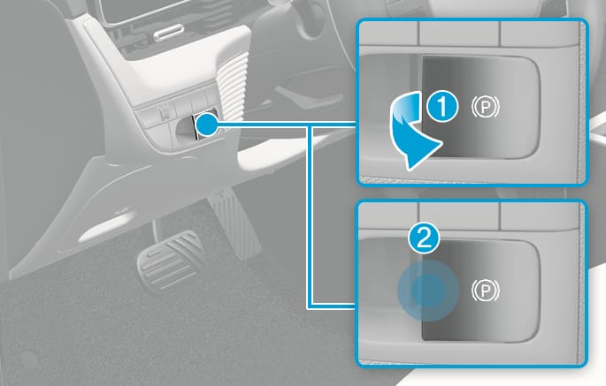

주차 브레이크(EPB)
주차 브레이크(Electronic Parking Brake, EPB)는 주차 중 차량이 이동하지 못하도록 바퀴를 고정하는 데 사용됩니다.
-
차량의 사용법을 모르는 사람이나 유아, 어린이, 애완동물이 EPB 스위치를 만지지 않도록 하십시오.
-
EPB 스위치 주변에 어떤 물체도 두지 마십시오. 의도치 않게 스위치가 눌려 주차 브레이크가 체결되거나 해제될 수 있습니다.
-
운전석을 떠나기 전에는 'P'(주차)로 변속하고 주차 브레이크를 체결한 후 차량이 움직이지 않는지 확인하십시오. 필요한 경우 바퀴에 고임목을 설치하십시오.
-
기온이 낮을 때 주차 브레이크 관련 장치가 어는 경우 주차 브레이크가 해제되지 않을 수 있습니다. 이런 경우 주차 브레이크를 사용하지 말고, 평탄하고 안전한 장소에 주차 또는 정차한 후 변속기 위치를 'P'(주차)에 두고 바퀴에 고임목을 설치하십시오.
-
주차 브레이크가 체결된 상태로 차량을 주행하지 마십시오. 브레이크가 과열되거나 브레이크 라이닝이 심하게 마모될 수 있으며, 주차 브레이크가 손상될 수 있습니다.
-
사용 미숙으로 인한 사고를 방지하려면 대리 주차나 대리운전을 위해 차량을 다른 사람에게 양도할 때 주차 브레이크 사용법을 설명하십시오.
-
배터리 충전량이 부족하면 전자식 주차 브레이크가 작동하지 않을 수 있습니다. 이런 경우, 보조 배터리를 연결한 후 주차 브레이크를 작동하십시오.

2C_EPBEngageRelease
- 주차 브레이크 체결
- 주차 브레이크 해제
주차 브레이크를 체결하거나 해제할 때 기계적인 작동음이 발생할 수 있습니다.
주차 브레이크 체결하기
차량을 정차한 후 브레이크 페달을 밟은 상태로 EPB 스위치를 당기십시오.
-
클러스터의 브레이크 경고등이 켜집니다.
주차 브레이크 해제하기
차량의 시동을 건 후 브레이크 페달을 밟은 상태로 EPB 스위치를 누르십시오.
-
클러스터의 브레이크 경고등이 꺼집니다.
차량에 적용된 다른 기능이 작동할 때 주차 브레이크가 자동으로 체결되거나 해제될 수 있습니다.
주차 브레이크 자동 체결
-
시동이 켜진 상태로 주차 브레이크를 체결하고 시동을 끄는 경우, 안전을 위해 주차 브레이크가 다시 체결될 수 있습니다.
-
자동 정차 기능(Auto Hold)을 켠 상태로 정차 후 시동을 끄면 자동으로 주차 브레이크가 체결됩니다.
주차 브레이크 자동 해제
-
시동이 켜진 상태로 주차 브레이크 체결 중, 'P'(주차) 또는 'N'(중립) 상태에서 브레이크를 밟고 'R'(후진) 또는 'D'(주행)로 변속하면 주차 브레이크가 자동으로 해제됩니다.
-
다음 조건을 모두 만족하는 경우, 가속 페달을 천천히 밟으면 주차 브레이크가 해제됩니다.
-
시동 켜짐
-
운전석 안전벨트 착용
-
운전석 도어, 후드, 테일게이트 닫힘
-
변속기 위치 'R'(후진) 또는 'D'(주행)
-
-
출발 전 브레이크 경고등을 확인하십시오. 주차 브레이크가 해제되면 클러스터의 브레이크 경고등이 꺼집니다.
-
주차 브레이크 자동 해제 조건이 아닐 때 가속 페달을 밟아 출발하려 하면 클러스터에 경고문이 표시되고 경고음이 울립니다. 이런 경우, 경고문을 확인하고 지시에 따르거나 브레이크 페달을 밟은 상태로 EPB 스위치를 눌러 주차 브레이크를 수동으로 해제하고 출발하십시오.
2C_EPBEnableToReleaseInfo
주행 중 브레이크에 문제가 발생한 경우 EPB 스위치를 당긴 상태로 유지해 차량을 비상 제동할 수 있습니다.
-
EPB 스위치를 비정상적으로 작동하였을 경우(과도한 조작, 지속적 작동)에는 EPB 경고등이 켜질 수 있습니다. 시동을 끄고 잠시 대기 후 다시 시동을 걸면 경고등이 꺼지면서 정상적인 작동 상태로 들어갑니다. 계속해서 EPB 경고등이 켜지면 당사 직영 하이테크센터나 블루핸즈에서 점검을 받으십시오.
-
EPB 스위치를 당겼을 때 브레이크 경고등이 켜지지 않거나 깜빡이면 주차 브레이크가 체결되지 않은 상태입니다. EPB 경고등이 켜진 상태에서 브레이크 경고등이 깜빡이는 경우 EPB 스위치를 한 번 눌렀다가 당긴 후 스위치를 원위치에서 다시 당겨보십시오. 계속해서 EPB 경고등이 켜지면 당사 직영 하이테크센터나 블루핸즈에서 점검을 받으십시오.
-
주차 브레이크로 비상 제동을 하고 난 후, 관련 장치에서 소음이 발생하거나 탄 냄새가 계속 날 경우, 시스템 손상일 수 있으니 당사 직영 하이테크센터나 블루핸즈에서 점검을 받으십시오.
비상 상황이 아니라면 주행 중에는 EPB 스위치를 작동하지 마십시오. 차량의 안정성이 저하되어 매우 위험한 상황이 발생할 수 있습니다.
-
비상 제동 기능은 스위치를 당기고 있는 동안만 작동하며, 스위치를 놓으면 작동이 중단됩니다.
-
EPB 스위치를 당긴 상태로 차량이 정차하면 주차 브레이크가 체결됩니다.
-
비상 제동 중에는 클러스터에 브레이크 경고등이 켜지고 경고음이 울립니다.
-
비상 제동 거리는 정상 제동 거리보다 길어질 수 있습니다.
주차 브레이크에 이상이 발생하면 클러스터에 EPB 경고등이 켜집니다.
EPB 스위치를 빠르게 반복해서 조작하거나 당긴 상태로 유지하면 EPB 경고등이 켜질 수 있습니다.
-
EPB 경고등이 켜진 경우, 시동을 끄고 잠시 기다린 후 시동을 걸어 경고등이 꺼지고 주차 브레이크가 정상적으로 작동하는지 확인하십시오.
-
EPB 경고등이 켜진 상태에서 브레이크 경고등이 깜빡이는 경우 EPB 스위치를 눌렀다 당긴 후 원래 위치에서 다시 당겨 보십시오.
-
EPB 경고등이 켜진 상태로 유지되는 경우 당사 직영 하이테크센터나 블루핸즈에서 차량을 점검하십시오.
-
주차 브레이크를 정상적으로 해제할 수 없는 경우, 당사 직영 하이테크센터나 블루핸즈로 차량을 견인한 후 점검하십시오.
-
차체 자세 제어(ESC) 장치 고장 시 ESC 경고등이 켜질 때 EPB 경고등이 함께 켜질 수 있습니다.
-
EPB 스위치를 당겼을 때 브레이크 경고등이 켜지지 않거나 깜빡이면 주차 브레이크가 체결되지 않은 것입니다. 작동 조건을 확인한 후 주차 브레이크를 다시 체결하십시오.